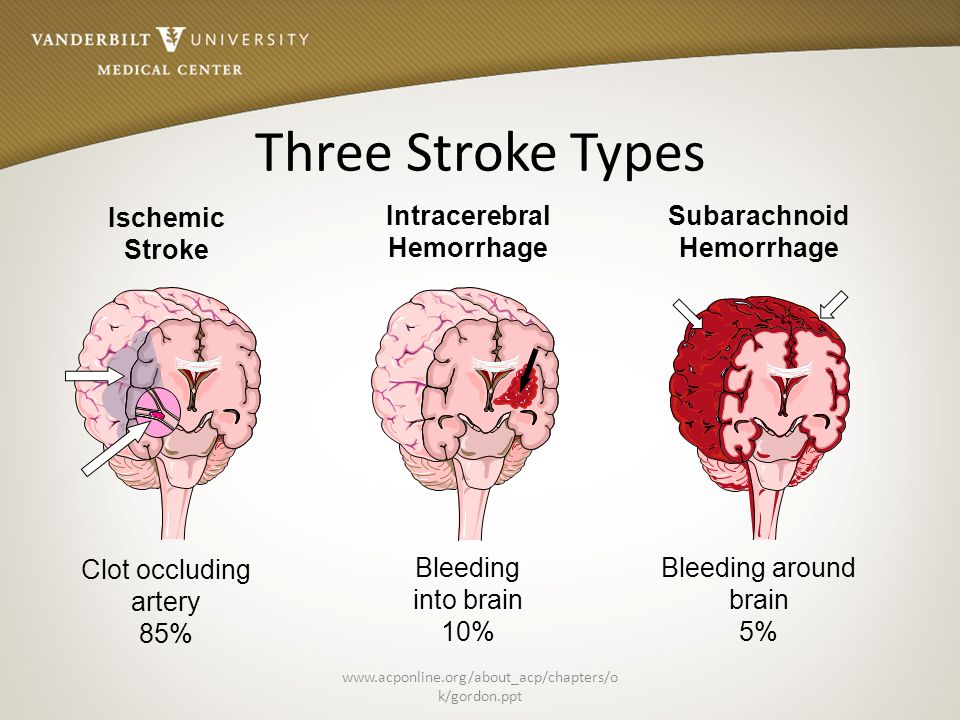
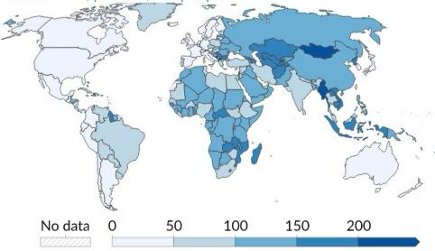
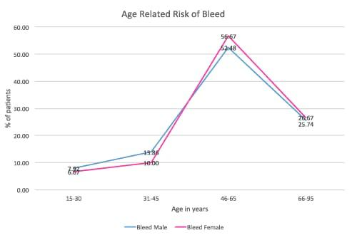
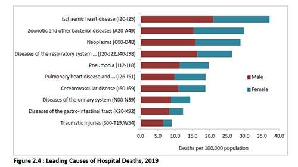

Stroke is a disease that affects the arteries leading to and within the brain. It is the No. 5 cause of death and a leading cause of disability in the United States.
A stroke occurs when a blood vessel that carries oxygen and nutrients to the brain is either blocked by a clot or bursts (or ruptures). When that happens, part of the brain cannot get the blood (and oxygen) it needs, so it and brain cells die.


What are the different types of strokes?
Stroke can be caused either by a clot obstructing the flow of blood to the brain (called an ischemic stroke) or by a blood vessel rupturing and preventing blood flow to the brain (called a hemorrhagic stroke). A TIA (transient ischemic attack), or "mini stroke", is caused by a temporary clot.
Let's Talk Statistics
Stroke Mortality Rates
stroke mortality rates are heavily influenced by the type of stroke and the speed of medical intervention. Ischemic strokes, more common than hemorrhagic strokes, generally have lower mortality rates. Quick treatment, especially within the first few hours, can significantly reduce the risk of death.

Increase in the risk of Brain Stroke
The risk of having a stroke doubles every decade after the age of 55. Approximately 75% of all strokes occur in individuals aged 65 and older. Despite this, one in seven strokes happen in adolescents and young adults aged 15 to 49. Stroke remains a leading cause of serious, long-term disability, particularly affecting the elderly, and significantly impacts their quality of life and independence.

Stroke frequency
Brain strokes strike with alarming frequency,
A leading cause of disability and mortality with tenacity.
Prompt recognition and treatment are crucial for recovery,
Education on prevention remains a frontline strategy with efficacy.
